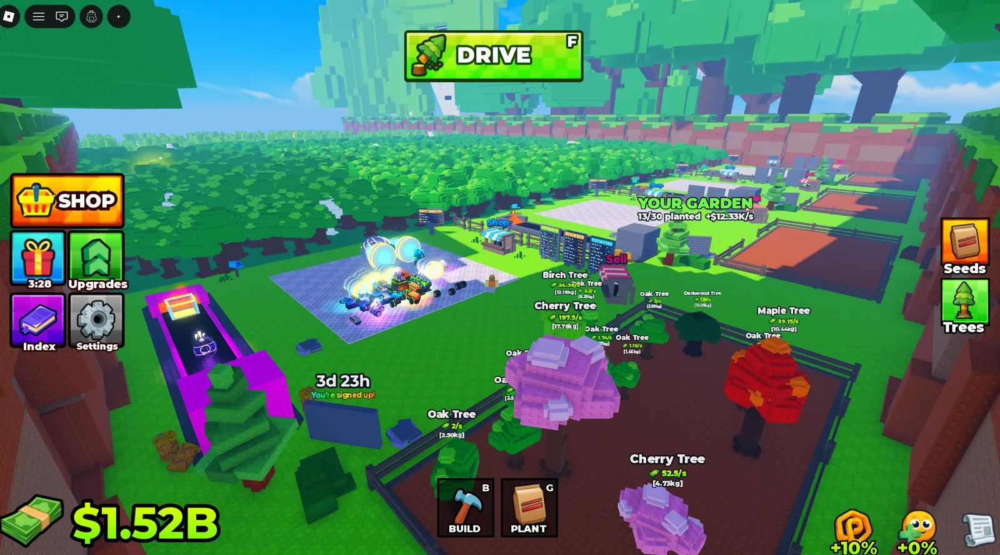
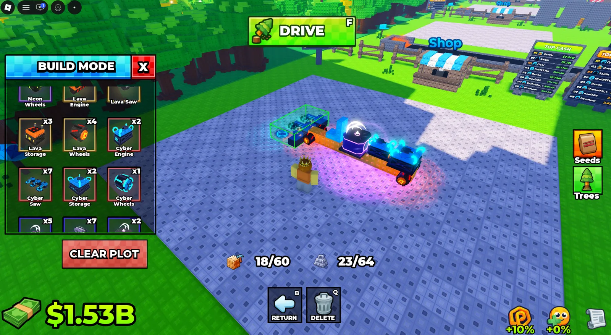
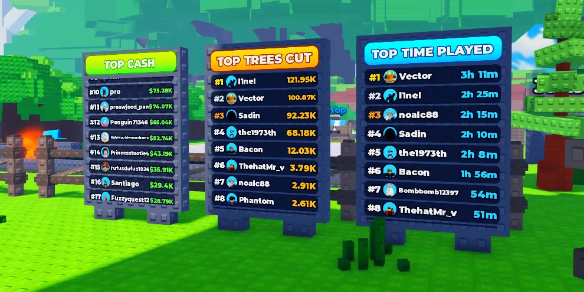
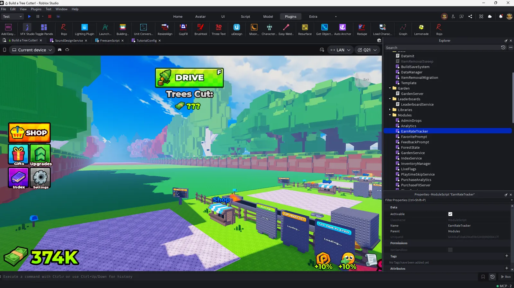

Build a Tree Cutter
My newest game, live on Roblox and growing. Players build their own vehicles, bolt saws onto them, drive into the forest, cut trees and sell the lumber to upgrade. I designed it as a modular, server-authoritative codebase: separate modules for vehicles, harvesting, plots and player data, with ProfileStore saving each player's builds.
- Build mode: place engines, saws, wheels and storage on your plot
- A garden where planted trees earn money over time
- Leaderboards and scheduled live events
- Player-built vehicles made from welded parts
- Seeded tree spawning that runs the same on server and client
- Storage and selling loop tied to drive zones
Problems I solved
Creating 50+ welds at once overloaded Roblox physics, and the client was simulating before the server finished. I set network ownership first and created welds in batches, so builds of every size now drive.
Once storage filled up, the client marked trees as cut before the server confirmed. I switched that flag to a short timeout, so denied cuts can be retried.
A fallback returned unverified positions when raycasts missed. Now it returns nothing and retries, so trees only land on real ground.



